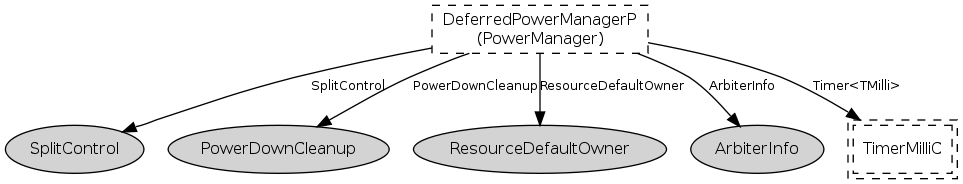

Please refer to TEP 115 for more information about this component and its
intended use.
This component povides a power management policy for managing the power
states of non-virtualized devices. Non-virtualized devices are shared
using a parameterized Resource interface, and are powered down according
to some policy whenever there are no more pending requests to that Resource.
The policy implemented by this component is to delay the power down of a
device by some contant factor. Such a policy is useful whenever a device
has a long wake-up latency. The cost of waiting for the device to power
up can be avoided if the device is requested again before some predetermined
amount of time.
Powerdown of the device is done through the SplitControl
interface, so this component can only be used with those devices that
provide that interface.
For devices providing either the AsyncStdControl or
StdControl interfaces, please use either the
AsyncStdControlDeferredPowerManagerC component or the
StdControlDeferredPowerManagerC component respectively.
